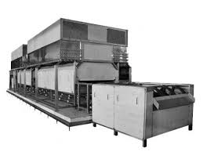
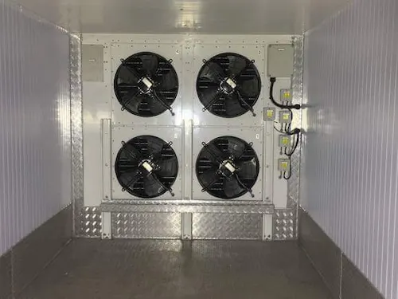
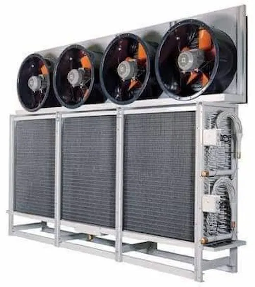

ما هو نظام IQF وكيف يعمل؟
IQF اختصار لـ Individual Quick Freezing أي التجميد السريع الفردي. يعني المصطلح تجميد كل قطعة من المنتج الغذائي بصورة مستقلة ومتسارعة، دون أن تلتصق القطع ببعضها أو تُشكّل كتلة صلبة. النتيجة: جمبري منفصلة حبة بحبة، وشرائح سمك مستقلة، وحبات بازلاء يمكن سكبها بالمقدار المطلوب دون فك التجميد.
تعمل تقنية IQF عبر ثلاثة مبادئ متكاملة:
- سرعة انتقال الحرارة العالية: يُدفع هواء مبرد شديد البرودة (‑35°C إلى ‑45°C) بسرعة عالية (4–6 م/ث) فوق المنتج وتحته، مما يُعظّم معامل انتقال الحرارة الحملي (h ≥ 50 W/m²·K).
- التعريض الكامل للسطح: يرقد المنتج على سير ثقب معدني (Perforated Belt) أو سير شبكي (Wire Mesh) يتيح للهواء النفاذ من الأسفل لرفع القطع وتحقيق حالة شبه تعليق (Fluidization)، مما يُعرّض سطح كل قطعة لتيار الهواء البارد من جميع الجهات.
- التحكم الدقيق في زمن المكوث: تُضبط سرعة السير المتحرك بحيث تخرج كل قطعة من النفق بعد بلوغ مركزها الحراري درجة ‑18°C أو أدنى — المعيار المطلوب دولياً للتجميد التام.
💡 مفهوم جوهري: الفارق الأساسي بين IQF وغيره ليس مجرد السرعة — بل هو منع التلاصق أثناء التجميد. هذا يتطلب تصميماً هندسياً خاصاً للسير والمروحة والغرفة الحرارية، وليس مجرد خفض درجة الحرارة.
فيزياء بلورات الجليد: سر الجودة في IQF
لفهم لماذا يُحافظ IQF على جودة المنتج، نحتاج إلى مسافة قصيرة في عالم الفيزياء الحيوية. كل خلية غذائية تحتوي على سائل خلوي (Intracellular Fluid) وسائل خارج خلوي (Extracellular Fluid). عند التجميد تُحدد سرعة الانتقال عبر المنطقة الحرجة (Critical Zone: ‑1°C إلى ‑5°C) حجم البلورات الجليدية المتشكّلة:
منطقة الخطر الحراري (Critical Freezing Zone)
بين ‑1°C و‑5°C تتحول نحو 80% من الماء الحر في الغذاء إلى جليد. في هذا النطاق إذا كان التجميد بطيئاً (أكثر من 60 دقيقة)، تتشكل بلورات جليد كبيرة خارج الخلية تسحب الماء من داخلها بقوة التناضح، فتنكمش الخلايا وتتمزق أغشيتها. النتيجة: عند إذابة التجميد يخرج عصير كثير (Drip Loss) ويصبح الملمس إسفنجياً والنكهة مائية.
في تقنية IQF، تعبر القطعة منطقة الخطر خلال أقل من 30 دقيقة (وأحياناً أقل من 10 دقائق للقطع الصغيرة)، فتتشكل بلورات جليد دقيقة جداً داخل الخلية (Intracellular Ice) دون إلحاق ضرر يُذكر بالبنية الخلوية.
| نوع التجميد | وقت العبور عبر المنطقة الحرجة | حجم بلورات الجليد | نسبة فقد العصارة (Drip Loss) | الجودة الحسية |
|---|---|---|---|---|
| تجميد بطيء (Traditional) | 4–24 ساعة | بلورات كبيرة 200–500 µm | 8–15% | ملمس طري — نكهة مائية |
| تجميد نفقي تقليدي (Blast) | 60–180 دقيقة | بلورات متوسطة 50–200 µm | 4–8% | جيدة لكن أقل من IQF |
| IQF نفقي قياسي | 8–30 دقيقة | بلورات صغيرة 10–50 µm | 1–3% | ممتازة — يكاد يطابق الطازج |
| IQF بالنيتروجين السائل | 1–5 دقائق | بلورات دقيقة جداً < 10 µm | 0.5–1.5% | استثنائية — للمنتجات الفاخرة |
✅ دلالة اقتصادية: تخفيض Drip Loss من 10% إلى 2% في خط إنتاج بـ 2 طن/ساعة يعني إنقاذ 160 كجم/ساعة من المنتج القابل للبيع. بسعر متوسط 30 ريال/كجم للأسماك المجمدة = 4,800 ريال/ساعة مُحتجزة في المنتج بدلاً من ضياعها.
مكونات منظومة IQF الصناعية
منظومة IQF الكاملة تتكون من أربعة أنظمة فرعية متكاملة، ويجب على المهندس فهم دور كل منها لاتخاذ قرارات تصميم صحيحة:
1. النفق الحراري (Freezing Tunnel)
هو الغرفة المعدنية المحكمة التي يعبر المنتج من خلالها. تُصنع من الفولاذ المقاوم للصدأ (SS304 أو SS316L) لمقاومة التآكل والامتثال لمعايير الغذاء. يتراوح طول الأنفاق القياسية بين 5 و25 متراً بحسب الطاقة الإنتاجية. عزل الجدران عادةً بلوح ساندويتش بوليورثان بسماكة 150–200 مم.
2. منظومة توليد البرودة (Refrigeration System)
قلب المنظومة. تعمل درجات التبخير في أنفاق IQF عند ‑40°C إلى ‑45°C، مما يستوجب ضواغط من النوع المزدوج المرحلة (Two-Stage Compression) أو استخدام مبردات ذات حرارة تبخير منخفضة كـ R507A أو R744 (CO₂). نظام الأمونيا (R717) هو الأمثل للطاقات الكبيرة (أكثر من 200 كيلو واط) لكفاءته الحرارية الفائقة في درجات الحرارة المنخفضة.

3. منظومة توزيع الهواء (Air Distribution System)
المروحة ونظام القنوات هما ما يُميّز نفق IQF عن غرفة التجميد العادية. تُستخدم مراوح محورية (Axial Fans) بمحركات EC ذات كفاءة عالية، مُركَّبة فوق المبخرات مباشرةً. تُصمَّم قنوات توزيع الهواء لتحقيق توزيع منتظم على كامل عرض السير (Uniformity ≥ 85%) بحيث لا تكون القطع الوسطى أسرع تجميداً من القطع الجانبية.
4. منظومة السير المتحرك (Conveyor System)
السير هو العنصر الأكثر حساسية ميكانيكياً في النفق. يُصنع من سلك الفولاذ المقاوم للصدأ أو بلاستيك مخصص للصناعات الغذائية (POM أو PE). مميزات السير الجيد:
- فتحات شبكية تُمكّن نفاذ الهواء من الأسفل (Airflow-through)
- سطح أملس غير لاصق لمنع التصاق المنتج
- تحمّل درجات حرارة حتى ‑50°C دون هشاشة
- سهولة الفك والتنظيف (CIP-compatible)
- مقاومة الزيوت والمبيدات ومواد التنظيف
أنواع أنفاق IQF وكيفية الاختيار
لا يوجد نوع واحد من أنفاق IQF يناسب كل منتج وكل مصنع. المعرفة الدقيقة بالأنواع الأربعة تُمكّن المهندس من اتخاذ القرار الأنسب:
1. النفق الخطي (Linear/Straight Tunnel)
الأبسط والأكثر شيوعاً. السير يسير في خط مستقيم من مدخل النفق إلى مخرجه. مناسب لمنتجات الروبيان والأسماك والدواجن. يتطلب مساحة أرضية طويلة (10–30 متر). الطاقة الإنتاجية: 500 كجم/ساعة إلى 5 طن/ساعة.
2. النفق الحلزوني (Spiral IQF)
السير يصعد في لفات حلزونية داخل برج دائري، مما يُضاعف المسافة الفعلية للتجميد بمساحة أرضية ضيقة. الحل الأمثل عندما تكون المساحة محدودة والطاقة عالية. تكلفة أعلى بـ 40–60% من الخطي، لكن كثافة الإنتاج للمتر المربع أعلى بـ 3 أضعاف. مناسب لمنتجات المخبوزات والدواجن والبيتزا.
3. نفق التعليق الهوائي (Fluidized Bed IQF)
يُدفع الهواء البارد من الأسفل بقوة كافية لرفع المنتج فوق السير قليلاً (Fluidization). يُحقق أسرع معدلات تجميد لأن الهواء يحيط بكل القطعة من 360 درجة. مناسب فقط للمنتجات الصغيرة المنتظمة: حبات البازلاء، الذرة، الفراولة، مكعبات الجزر. غير صالح للقطع الكبيرة أو غير المنتظمة.
4. نفق السير المزدوج (Double-Belt IQF)
سيران متوازيان يتحركان بسرعات مختلفة مع غرفة تجميد بين طبقتين. يُستخدم للمنتجات الطرية التي قد تتشوه تحت وزنها (عجائن، دونات، منتجات محشوة). أكثر تعقيداً هندسياً لكنه يحفظ شكل المنتج بدقة.
| النوع | أفضل التطبيقات | المساحة المطلوبة | التكلفة النسبية | سرعة التجميد |
|---|---|---|---|---|
| خطي (Linear) | أسماك، روبيان، دواجن مقطعة | مرتفعة (8–30 م) | 1× (مرجع) | سريع |
| حلزوني (Spiral) | مخبوزات، دواجن، بيتزا | منخفضة جداً | 1.5–1.8× | سريع |
| تعليق هوائي (Fluidized) | بازلاء، ذرة، فراولة، مكعبات | متوسطة | 1.2–1.5× | سريع جداً |
| سير مزدوج (Double-Belt) | عجائن، منتجات محشوة | متوسطة | 1.8–2.2× | سريع |
معايير التصميم الهندسي لنظام IQF
التصميم الهندسي الصحيح لنظام IQF يُحدد الفرق بين منشأة مربحة ومنشأة تُعاني من انخفاض الإنتاج وارتفاع تكاليف التشغيل. إليك المعايير الأساسية:
أولاً: حساب الحمل الحراري (Thermal Load Calculation)
الحمل الكلي على نظام التبريد في نفق IQF يتكون من:
- حمل المنتج (Product Load): الطاقة المطلوبة لخفض حرارة المنتج من درجة الدخول إلى ‑18°C، تشمل الحرارة الحسية فوق نقطة التجمد + الحرارة الكامنة للتجمد + الحرارة الحسية تحت نقطة التجمد.
- حمل التسخين من الخارج (Transmission Load): عبر الجدران والأرضية والسقف، يُحسب بمعادلة Q = U × A × ΔT.
- حمل الأجهزة الكهربائية (Equipment Load): محركات المراوح والسير والإضاءة ≈ 3–5% من حمل المنتج في الأنفاق المحكمة العزل.
- حمل فتح الأبواب والتسريب: يُضاف معامل أمان 10–15% على المجموع.
ثانياً: معادلة زمن المكوث (Residence Time)
يُحسب الحد الأدنى لزمن المكوث بطريقة الكتلة المركزية (Lump Capacitance Method) أو نموذج Plank للمنتجات السميكة. القاعدة التجريبية الشائعة للأسماك والدواجن:
معادلة تقريبية (Empirical Rule):
زمن المكوث (دقيقة) ≈ C × d²
حيث d = نصف سماكة القطعة (سم)، C = ثابت يعتمد على درجة الهواء:
• عند ‑35°C و5 م/ث: C ≈ 3.5–4.0 للأسماك
• عند ‑40°C و6 م/ث: C ≈ 2.8–3.2 للأسماك
مثال: فيليه سمك بسماكة 2 سم → زمن = 3.5 × 1² = 3.5 إلى 4 دقائق
فقط
ثالثاً: معايير التصميم حسب نوع المنتج
| المنتج | سماكة القطعة | درجة دخول المنتج | درجة هواء النفق | زمن المكوث المستهدف | كثافة التحميل (كجم/م²) |
|---|---|---|---|---|---|
| روبيان (21/25) | 12–16 مم | 4°C – 10°C | ‑40°C | 6–10 دقائق | 8–12 |
| فيليه سمك | 15–25 مم | 2°C – 5°C | ‑38°C | 10–18 دقيقة | 10–15 |
| صدور دجاج مقطعة | 20–35 مم | 4°C – 8°C | ‑40°C | 14–25 دقيقة | 12–18 |
| بازلاء خضراء | 7–12 مم | 10°C – 20°C | ‑35°C | 4–7 دقائق | 15–25 |
| فراولة كاملة | 20–35 مم | 8°C – 15°C | ‑38°C | 12–20 دقيقة | 10–14 |
رابعاً: التحقق الحراري (Thermal Validation)
قبل بدء الإنتاج التجاري، يستوجب معيار HACCP وBRC اختبار تحقق حراري يُثبت وصول مركز أسمك قطعة في الدفعة (Coldest Point) إلى ‑18°C خلال الزمن المضبوط. يتطلب ذلك:
- مجسّات حرارية مُعايَرة مزروعة في مراكز عيّنات متعددة
- تسجيل مستمر عبر نظام SCADA أو مسجّلات بيانات (Data Logger)
- إجراء 3 دفعات تحقق ناجحة متتالية قبل اعتماد المعلمة
- توثيق النتائج وحفظها لمدة لا تقل عن 5 سنوات
التطبيقات الصناعية في المملكة العربية السعودية
تشهد المملكة العربية السعودية نمواً ملحوظاً في تقنية IQF مدفوعاً برؤية 2030 وتوجه الدولة نحو الأمن الغذائي وتنويع الصادرات. أبرز التطبيقات الميدانية:
1. قطاع الأسماك والمأكولات البحرية
تُصنَّف المملكة ضمن أكبر مستوردي الأسماك والمأكولات البحرية عالمياً بأكثر من 350,000 طن سنوياً. تعمل منشآت التجميد الكبرى في ميناء الجبيل وجدة الإسلامي وينبع على خطوط IQF بقدرات تتراوح بين 2 و10 أطنان/ساعة. المنتجات الأساسية: روبيان مجمّد خام، فيليه سمك، حبار، سلق.

2. مصانع الدواجن واللحوم المجمّدة
مع قدوم مصانع الدواجن الكبرى في الرياض والقصيم والطائف، أصبح IQF الخيار الاستراتيجي لتجميد الأجزاء المجزأة (أفخاذ، أكتاف، صدور) قبل التغليف. يُتيح IQF بيع المنتج بالوزن الدقيق دون تشكّل كتل جليدية، مما يُرضي متطلبات متاجر التجزئة الحديثة وسلاسل المطاعم.
3. مصانع الخضروات والفواكه المجمّدة
شهدت المملكة نمو هذا القطاع مع التوسع في مزارع الخضروات بالمنطقة الوسطى والشمالية. خطوط IQF للبازلاء والذرة الحلوة والفلفل الأخضر تعمل بأنظمة Fluidized Bed بكفاءة عالية وتكاليف تشغيل منخفضة.
4. مصانع المنتجات شبه المصنّعة (Semi-Finished Products)
تُستخدم تقنية IQF لتجميد مكونات الوجبات الجاهزة: مكعبات الجبن، صلصة المشروم، حلقات الكاليماري، الأعشاب المقطعة، ومكونات البيتزا. هذه المنتجات تحتاج لـ IQF حصراً إذ لا يمكن تجميدها كتلةً ثم فصلها لاحقاً.
✅ من مشاريع الفريدة آيس: نفّذنا في 2024 خطَّ IQF لمصنع معالجة أسماك في الجبيل الصناعية بطاقة 3 أطنان/ساعة، استخدم نظام أمونيا ثنائي المرحلة مع نفق خطي 18 متراً. حقّق المصنع خفضاً في Drip Loss من 9% (الخط القديم) إلى 2.1% — وهو ما أضاف قيمة مبيعات إضافية تجاوزت 2 مليون ريال سنوياً.
IQF مقابل تقنيات التجميد الأخرى
IQF ليس الحل الوحيد ولا دائماً الأمثل. إليك مقارنة موضوعية مع أبرز تقنيات التجميد الصناعي الأخرى:
| المعيار | IQF نفقي | Blast Freezer | Plate Freezer | Contact Freezer |
|---|---|---|---|---|
| المنتجات المناسبة | قطع متفرقة صغيرة ومتوسطة | منتجات كبيرة / دفعات كاملة | بلوكات مستطيلة منتظمة | صناديق / كراتين كاملة |
| سرعة التجميد | جداً سريع (8–30 دقيقة) | متوسط (1–6 ساعات) | سريع للبلوكات (30–90 دقيقة) | بطيء (6–24 ساعة) |
| جودة المنتج | ممتازة — بلورات صغيرة | جيدة | جيدة للأسماك الكاملة | مقبولة |
| خسارة الوزن (Drip Loss) | 1–3% | 4–10% | 2–5% | 6–12% |
| مرونة المنتج | عالية جداً | متوسطة | منخفضة (منتجات محددة) | منخفضة |
| الاستهلاك الكهربائي | مرتفع نسبياً | متوسط | منخفض | منخفض |
| المساحة المطلوبة | كبيرة (خطي) / صغيرة (حلزوني) | كبيرة | صغيرة | صغيرة جداً |
| التكلفة الاستثمارية | مرتفعة | متوسطة | منخفضة–متوسطة | منخفضة |
⚠️ متى لا تختار IQF: إذا كان منتجك يُباع بالكراتين المجمّدة كاملاً ولا توجد حاجة للفصل الفردي، فإن Plate Freezer أو Blast Freezer يُقدّمان كفاءة أعلى بتكلفة أقل. IQF يستحق الاستثمار عندما يدفع السوق علاوة سعرية على المنتج المجمّد فردياً.
التشغيل والصيانة الدورية لنظام IQF
الأداء المثالي لنفق IQF لا يُستدام إلا بصيانة منضبطة. التراخي في الصيانة لا يُتسبب فقط في تدهور جودة المنتج، بل يُعرّض المنشأة لمخاطر السلامة الغذائية وخسارة الاعتمادات الدولية.
إدارة تراكم الجليد (Defrost Management)
تراكم الجليد على المبخرات هو التحدي الأول في تشغيل أنفاق IQF. بروتوكولات إذابة الجليد (Defrost) تشمل:
- الإذابة بالهواء الساخن (Hot Gas Defrost): الأسرع والأكثر شيوعاً في الأنفاق الكبيرة. يُضخ غاز ساخن عالي الضغط من الكمبروسر عبر دائرة عكسية إلى المبخر. دورة كاملة: 20–40 دقيقة.
- الإذابة بالمياه (Water Defrost): رش ماء فاتر (40°C) على المبخر. سريع (10–20 دقيقة) لكن يستوجب نظام صرف صحي ونظافة دقيقة.
- الإذابة الكهربائية (Electric Defrost): سهلة التحكم لكن استهلاكها الكهربائي أعلى. تُستخدم في الأنفاق الصغيرة.
جدول الصيانة الدورية الموصى به
| التكرار | المهمة | الجهة المسؤولة | المعيار المرجعي |
|---|---|---|---|
| يومي | تسجيل درجات الحرارة والضغط، فحص السير بصرياً | مشغّل الخط | SOP داخلية + HACCP |
| أسبوعي | تنظيف السير وإزالة الجليد والرواسب | فريق النظافة الصناعية | GMP / BRC |
| أسبوعي | فحص التوتر والمحاذاة للسير | مهندس صيانة | دليل المصنّع |
| شهري | تشحيم محامل السير والمراوح، اختبار أجهزة السلامة | مهندس صيانة | ISO 22000 |
| ربع سنوي | فحص شامل للعزل الحراري، اختبار السير بالحمل الكامل | فريق صيانة متخصص | ASHRAE 15 |
| سنوي | فحص دائرة التبريد، اختبار ضغط، مراجعة Thermal Validation | مهندس معتمد خارجي | EN 378 / IIAR |
🚨 تنبيه تشغيلي: الإهمال في تنظيف السير أسبوعياً يُؤدي إلى تراكم بيو-فيلم (Biofilm) يُشكّل خطر تلوث بكتيري حتى في درجات الحرارة المنخفضة. بعض بكتيريا Listeria تنمو حتى عند ‑2°C وقد تُلوّث دفعات إنتاج كاملة.
المعايير والاعتمادات الدولية
المنتجات المجمّدة بـ IQF المُوجَّهة للتصدير أو لسلاسل التجزئة الكبرى تستوجب الامتثال لمنظومة متكاملة من المعايير الدولية:
معايير السلامة الغذائية
- HACCP (Hazard Analysis Critical Control Points): يُحدد نقاط التحكم الحرجة في خط الإنتاج. درجة حرارة مركز المنتج عند الخروج من النفق (CCP) يُعدّ من أبرز CCPs في نظام IQF.
- ISO 22000:2018: المعيار الدولي لنظم إدارة سلامة الأغذية. يُشترط توثيق برامج المتطلبات التشغيلية (OPRPs) الخاصة بالتحكم في درجات الحرارة.
- BRC Global Standard Food Safety Issue 9: المعيار الأوروبي للتصدير إلى المملكة المتحدة وأسواق الاتحاد الأوروبي. يُطالب بتحقق حراري موثق لكل خط IQF.
- SQFI (SQF Food Safety Code): المعيار الأمريكي للتصدير إلى أسواق الولايات المتحدة وكندا.
- SFDA (هيئة الغذاء والدواء السعودية): تستوجب تسجيل منشآت التجميد الغذائية وفق اللوائح المحلية المحدّثة 2024، مع استيفاء اشتراطات درجات التخزين والتجميد القياسية.
معايير التبريد الهندسية
- ASHRAE Standard 15-2022: سلامة أنظمة التبريد — التهوية والإشارات التحذيرية وكاشفات التسرب.
- EN 378:2021 (أوروبي): متطلبات السلامة والبيئة لأنظمة التبريد والمضخات الحرارية.
- IEC 60204-1: السلامة الكهربائية للآلات الصناعية بما فيها المحركات والمتحكمات في أنفاق IQF.
💡 نصيحة للمصدّرين: إذا كنت تستهدف تصدير مأكولات بحرية مجمّدة بـ IQF إلى الاتحاد الأوروبي، تأكد من حصول منشأتك على ترخيص EC Number من المفوضية الأوروبية إضافةً إلى BRC أو IFS. هذا الترخيص يتطلب تحقق حراري موثق لكل منتج على كل خط إنتاج.
الأسئلة الشائعة حول تقنية IQF
في التجميد الاعتيادي تُجمَّد المنتجات ببطء (ساعات أو أيام)، مما يُكوّن بلورات جليد كبيرة تُمزق الخلايا وتُفقد العصارة عند الإذابة. في تقنية IQF تعبر القطعة خلال المنطقة الحرجة (‑1°C إلى ‑5°C) في أقل من 30 دقيقة عبر هواء شديد البرودة (‑35°C إلى ‑45°C)، فتتشكل بلورات جليد دقيقة لا تُلحق ضرراً بالخلايا، مما يحفظ النكهة والملمس والقيمة الغذائية.
تشمل أبرز تطبيقات IQF: الأسماك والمأكولات البحرية (فيليه، روبيان، حبار)، الدواجن (قطع مجزأة)، اللحوم (شرائح رفيعة، مكعبات)، الخضروات (بازلاء، ذرة، فلفل، قطع بروكلي)، الفواكه (فراولة، توت)، والمخبوزات (عجينة، دونات، كروسون). الشرط الأساسي هو أن يكون المنتج قطعاً متفرقة قابلة للانسياب.
تتراوح سرعة الحزام بين 0.05 و0.5 م/دقيقة وتُضبط بناءً على وزن القطعة وزمن المكوث المطلوب. القاعدة الهندسية: وزن المنتج (غ) × 0.065 = الحد الأدنى من دقائق المكوث للوصول لمركز حراري ‑18°C في الأسماك. لكل منتج يتطلع المصنع لتجميده يجب إجراء اختبار تحقق حراري (Thermal Validation) قبل الإنتاج الفعلي.
تتراوح تكلفة نظام IQF متكامل بقدرة طن/ساعة بين 1.5 و4 مليون ريال سعودي بحسب النوع والمصنّع. عائد الاستثمار (ROI) يتحقق عادةً خلال 2–5 سنوات نظراً لارتفاع القيمة المضافة للمنتج المجمّد بـ IQF الذي يُباع بسعر أعلى بـ 20–40% من المجمّد تقليدياً.
الفريدة آيس للهندسة والتبريد الصناعي بالدمام تمتلك خبرة موثقة في تصميم وتنفيذ منظومات التجميد السريع IQF لمصانع الأسماك واللحوم والدواجن في المنطقة الشرقية والمملكة العربية السعودية، مع دعم هندسي كامل من الدراسة حتى التشغيل والصيانة الدورية.
الخلاصة: متى يكون IQF القرار الصحيح لمشروعك؟
تقنية IQF ليست مجرد معدة تجميد — هي قرار استراتيجي يُعيد تشكيل مكانة منتجك في السوق. الاستثمار فيها يُبرَّر عندما:
- يدفع المشترون علاوة سعرية واضحة على المنتج المجمّد فردياً
- تستهدف أسواق التصدير التي تشترط BRC أو HACCP مع تحقق حراري
- منتجك لا يتحمل Drip Loss عالية دون خسارة جودة وقيمة (أسماك، روبيان، دواجن)
- طاقتك الإنتاجية تتجاوز 500 كجم/ساعة (تحت هذا الحجم قد تكون غرفة Blast Freezer أوفر)
- تريد مرونة تشغيلية لتجميد منتجات متنوعة على نفس الخط
✅ هل تحتاج دراسة جدوى لنظام IQF؟ فريق مهندسي الفريدة آيس جاهز لإعداد دراسة هندسية مجانية تشمل: حسابات الحمل الحراري، مقارنة الأنواع، تقدير التكلفة وعائد الاستثمار لمشروعك تحديداً. تواصل معنا الآن.